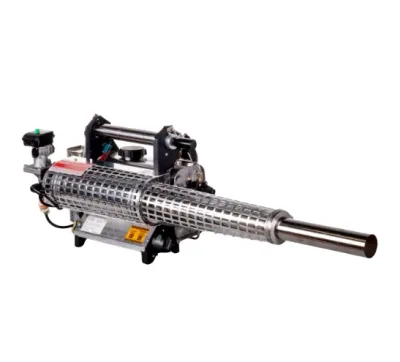
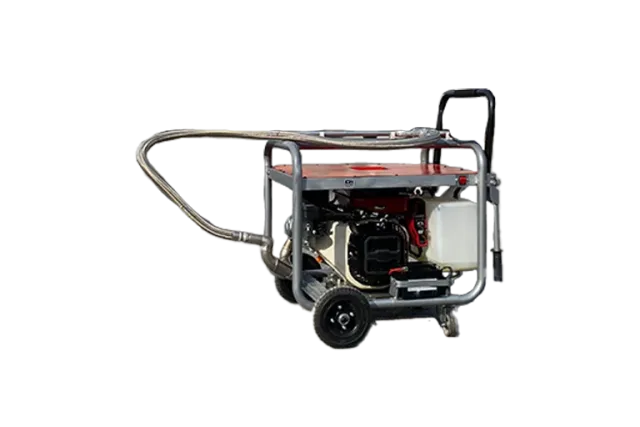

Termal · Model K-100
Duru K 100
15 hp Briggs, 20 L, termal kanalizasyon / don önleyici
Motor: 15 hp benzinli Briggs
İlaç Tank Kapasitesi: 20 litre
İlaç Çıkış Debisi: 15 bar
Püskürtme Hortumu: 2.30 m esnek metal kanal aparatı
Teknik Özellikler
Duru K 100 — teknik tablo
| Motor | 15 hp benzinli Briggs |
|---|---|
| İlaç Tank Kapasitesi | 20 litre |
| İlaç Çıkış Debisi | 15 bar |
| Püskürtme Hortumu | 2.30 m esnek metal kanal aparatı |
| Yakıt Tüketimi (motor) | 0,75–1 L/saat |
| İlaç Yakıt Tüketimi | 10–20 L/saat (ayarlanabilir) |
| Damla Çapı | ~20 mikron (termal) |
| Teker | 2 frenli + 2 düz teker |
Neden bu model
Detaylı açıklama
Termal Kanalizasyon Sisleme Makinesi Nedir?
15 HP benzinli Briggs motorla çalışan bu kanalizasyon sisleme makinesi, Duru ürün ailesinde Duru K 100 model adıyla satılır. Termal (sıcak sisleme) prensibiyle çalışan cihaz, ilaç ve yağ bazlı solüsyon karışımını yüksek ısıya maruz bırakarak yaklaşık 20 mikron çapında yoğun bir sis üretir. 2.30 metrelik paslanmaz çelikten esnek kanal aparatı sayesinde, sisin kanalizasyon hatları ve çöp konteynerleri gibi kapalı hacimlere derinlemesine ulaşması sağlanır.
Kanal İlaçlama Makinesi Nerelerde Kullanılır?
Duru K 100, öncelikle kanalizasyon hatlarında larva, sivrisinek, karasinek ve büyük cüsseli böceklerin (uçkun) kaynağında yok edilmesi için tasarlanmıştır. Esnek hortum bağlantısı çıkarıldığında cihaz açık alan sıcak sisleme uygulamasına dönüşür; bu sayede oteller, eğlence parkları, golf sahaları, askeri alanlar, tatil köyleri, yeşil alanlar ve ormanlık bölgelerde geniş ölçekli haşere mücadelesi yapılabilir. Bataklık, atık su ve çöp yığın alanlarında koku giderici dezenfektan olarak da kullanılan cihaz, tarımsal alanlarda kışın seraların donmasını önlemek için antifriz/don önleyici olarak da çalıştırılabilir.
Teknik Üstünlükler: Neden Duru K 100?
20 mikronluk termal sis, havada uzun süre asılı kalır: cihazın ürettiği bir zerreciğin hava sirkülasyonu olmayan bir ortamda 10 metre yükseklikten yere düşmesi yaklaşık 14 dakika sürer; kanalizasyon gibi hava akışı olan hacimlerde bu süre daha da uzayarak yüksek verimli, kalıcı bir biyosidal etki sağlar. 15 HP Briggs motor, dakikada yüksek debili sis üretimini güvenilir biçimde besler; motor yakıt tüketimi 0,75–1 L/saat düzeyindedir. 20 litrelik ilaç tankı ve 10–20 L/saat ayarlanabilir ilaç debisi, uzun saha çalışmalarına uygun kapasite sunar. 2 frenli + 2 düz tekerlekli ergonomik şase, cihazın sabitlenmesini ve saha içinde kolay taşınmasını sağlar. Paslanmaz çelik esnek hortum, dar ve zorlu kanal geometrilerinde dahi güvenli kullanım imkânı verir.
Kanalizasyon Sisleme Makinesi Fiyatı ve Teklif Süreci
Duru K 100'ün fiyatı, kullanım amacınıza ve sipariş adedinize göre değişebileceğinden sitemizde sabit fiyat paylaşmıyoruz. "Teklif Al" formunu doldurarak ihtiyacınıza özel bir teklif alabilir; elde taşınabilir bir alternatif için Termal El Tipi modelini de inceleyebilirsiniz.
Kullanım Alanları
Bu model nerede tercih ediliyor?
Belediye
Hastane
Sera
Fabrika
Askeriye
Çiftlik
Sıkça Sorulan Sorular
Hızlı yanıtlar
Termal sisleme, solüsyonu ısıyla buharlaştırarak yoğun görünür bir sis üretir ve kanal gibi kapalı hacimlerde üstündür; ULV ise elektrikle soğuk sis üretir. K 100 termal prensiple çalışır.
Özellikle larva, sivrisinek, karasinek ve büyük cüsseli uçkun türlerine karşı tasarlanmıştır.
Hayır. Hortum çıkarıldığında açık alan sıcak sisleme ve don önleme (antifriz) uygulaması da yapılabilir.
Termal sisleme için yağ bazlı solüsyon karışımı kullanılır.
15 HP benzinli Briggs motorun yakıt tüketimi 0,75–1 L/saat, ilaç debisi ise 10–20 L/saat aralığında ayarlanabilir.
İlgili Ürünler